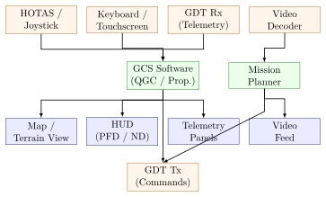
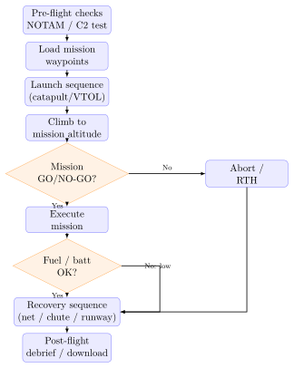

Chapter 12: Ground Control Systems¶
12.1 Ground Control Systems¶
The Ground Control System (GCS) is the terrestrial or vehicle-mounted installation from which an unmanned aerial vehicle (UAV) is operated, monitored, and managed throughout its mission. It encompasses the operator workstation hardware, display and input devices, communications equipment, launch and recovery infrastructure, mission planning software, logistics support, and all the human factors that determine operational effectiveness. No matter how capable the airborne platform, the GCS is the critical interface between human intent and autonomous execution. A poorly designed GCS degrades mission performance, increases crew workload, and — in military contexts — can directly determine mission success or failure. This chapter provides a comprehensive engineering treatment of every major GCS subsystem.
12.2 GCS Architecture¶
12.2.1 Hardware Form Factors¶
GCS hardware spans a wide range of form factors matched to operational context:
Man-Portable GCS.
A single ruggedised laptop (MIL-STD-810H) or tablet (e.g., Panasonic Toughbook FZ-55; Samsung Tab Active5) running open-source or proprietary GCS software. Paired with a compact ground data terminal (GDT) in a Pelican case. Total system weight: 8–15 kg; setup time: \(<\)10 min. Suitable for small tactical UAVs (Group 1–2: \(<\)25 kg; \(<\)300 m AGL).
Vehicle-Mounted GCS.
A rack-mounted workstation installed in a light tactical vehicle (HMMWV, JLTV, Land Rover) or a dedicated shelter (S-250, S-280). Provides two or three operator seats with 24-inch displays, a dedicated pilot control station with HOTAS, and a separate sensor operator console. Vehicle integration must address shock/vibration per MIL-STD-810H Method 514.8 and electromagnetic interference per MIL-STD-461G CS114 (conducted susceptibility).
Fixed Ground Control Station.
Container- or building-based; full mission-planning suite; multiple UAV management over satellite links; persistent 24/7 operation. Examples: General Atomics Block 50 GCS for MQ-9B; Northrop Grumman RQ-4 GCS; Air Operations Center (AOC) integrations. These stations operate RQ/MQ-class aircraft at tactical control ranges over C-band LOS datalinks and at strategic ranges over Ku-band or Ka-band SATCOM.
12.2.2 Software Stack¶
-
QGroundControl (QGC): open-source, cross-platform (Windows, Linux, macOS, Android, iOS); MAVLink protocol; supports ArduPilot and PX4; widely used in research and commercial small-UAS applications.
-
Mission Planner: Windows-only; ArduPilot primary GCS; advanced scripting, Lua plugins, 3D terrain visualisation.
-
DJI Ground Station Pro: tablet-based; waypoint, area, and orbit missions for DJI platforms; real-time telemetry overlay on satellite map.
-
Proprietary military GCS: Northrop Grumman OSCAR, General Atomics AFCS, L3Harris ROVER; NATO STANAG 4586 compliant; encrypted C2 over military datalinks.
STANAG 4586 defines a standardised UAV Control System (UCS) architecture with data element libraries (DEL) and interface control documents (ICD) enabling one GCS to control multiple UAV types.
12.2.3 Display Architecture and HUD¶

A modern GCS display suite typically comprises:
-
Map/Terrain view: Slippy map (OpenStreetMap, Google Maps satellite, or classified terrain tiles); UAV icon with track history; waypoints; no-fly zones; sensor footprint overlay.
-
Primary Flight Display (PFD): artificial horizon, airspeed, altitude, vertical speed, heading — standard avionics formats.
-
Navigation Display (ND): HSI-style compass rose; waypoint bearing and distance; wind vector.
-
Telemetry panels: engine/motor health; battery/fuel level; link quality; GPS fix status; payload status.
-
Video feed: EO/IR camera; picture-in-picture capable; OSD overlay with GPS coordinates of video centre, slant range, target elevation.
12.2.4 Input Devices¶
HOTAS — Hands on Throttle-and-Stick.
Adopted from manned aviation, HOTAS systems (e.g., Thrustmaster Warthog, CH Products Pro Pedals) keep both hands engaged continuously during critical flight phases. Buttons on the throttle grip control camera mode, zoom, marker placement, and emergency RTH, while the stick controls aircraft attitude or velocity commands depending on automation level.
Touchscreen and Tablet Inputs.
Capacitive touchscreens enable intuitive waypoint dragging, pinch-to-zoom on map views, and gesture-based camera slewing. Operational limitation: gloves, rain, or bright sunlight degrade usability. MIL-spec resistive touchscreens remain preferred in adverse outdoor environments.
12.2.5 Redundancy and Hot-Standby GCS¶
Mission-critical UAV programmes (ISR, persistent surveillance) require continuous operation despite GCS hardware failure. The hot-standby architecture:
-
Primary GCS (PGCS) and standby GCS (SGCS) both receive the downlink (receive-only for SGCS).
-
PGCS transmits a heartbeat to SGCS every 500 ms.
-
If SGCS detects heartbeat loss for \(>\)2 s, it assumes PGCS failure and activates uplink transmission.
-
Switchover time: \(<\)5 s; maintained by the UAV autopilot entering a safe loiter at lost-link waypoint during the switchover gap.
State synchronisation (waypoint list, flight mode, camera settings) is maintained via a local Ethernet or RS-485 link between PGCS and SGCS.
12.3 Ground Data Terminal¶
12.3.1 Antenna System and Auto-Tracking¶
The Ground Data Terminal (GDT) is the RF front-end of the GCS, comprising a directional high-gain antenna, a pan-tilt pedestal, and transmit/receive electronics.
Pan-Tilt Pedestal.
The antenna pedestal provides continuous 360° azimuth rotation and \(-5°\) to \(+90°\) elevation travel. A servo-driven encoder feedback loop tracks the UAV using its GPS position broadcast over the telemetry link:
where \((E, N, H)\) are easting, northing, altitude in a local ENU frame. Tracking accuracy: \(\pm\)0.1° RMS in steady state; \(\pm\)0.5° during fast angular rates (\(>\)5°/s for low-altitude near-overflight).
Antenna Types.
-
Yagi-Uda: 10–17 dBi gain; 902–928 MHz or 2.4 GHz; low cost; typical for Group 1–2 systems.
-
Patch/LPDA array: 14–20 dBi; 2.4/5.8 GHz; compact; thermal reliability.
-
Parabolic dish: 25–35 dBi; C-band (5.03–5.09 GHz CNPC); Ku-band (13.75–14.5 GHz) for SATCOM relay; used on MQ-9, RQ-4.
12.3.2 Link Budget and Range Calculation¶
The Friis transmission equation (see also Chapter 8) gives received power:
(all quantities in dBW or dBm, gains in dBi, losses in dB).
Free-space path loss at frequency \(f\) (Hz) over range \(d\) (m):
Required SNR at receiver for reliable demodulation:
where \(E_b/N_0\) is the required bit-energy-to-noise-density (depends on modulation/coding: e.g., QPSK with rate-1/2 LDPC requires \(E_b/N_0 \approx 2.5\) dB for \(10^{-6}\) BER), \(R_b\) is bit rate, and \(B\) is noise bandwidth.
Link margin:
where \(N_0 = kT_0 = -174\) dBm/Hz at 290 K and \(F_{\text{NF}}\) is receiver noise figure. A margin of \(M_{\text{link}} \geq 10\) dB is the standard design target.
Example.
C-band LOS link; \(f = 5.06\) GHz; \(d = 200\) km; \(P_t = 50\) W (\(= 47\) dBm); \(G_t = 32\) dBi (ground dish); \(G_r = 5\) dBi (omnidirectional on aircraft); \(F_{\text{NF}} = 2\) dB; \(R_b = 4\) Mbps; modulation QPSK rate-1/2 LDPC.
A 34.9 dB margin is generous; in practice, rain fade (up to 10 dB at 5 GHz in heavy rain), pointing loss (\(\approx\)2 dB), and polarisation mismatch (\(\approx\)1 dB) are budgeted, leaving \(\approx\)22 dB operational margin.
| System | Freq. band | Tx power | Antenna gain | Range | Platform |
|---|---|---|---|---|---|
| L3Harris ROVER 6 | C-band (5 GHz) | 10 W | 32 dBi (dish) | 200 km | MALE/HALE |
| Viasat CDL | Ku-band | 20 W | 38 dBi (dish) | 400 km | HALE/SATCOM |
| Microhard pDDL900 | 900 MHz | 1 W | 10 dBi (Yagi) | 60 km | Group 2–3 |
| Persistent MPU5 GCS | 2.4/5 GHz | 100 mW | 5 dBi (patch) | 5 km | Group 1 |
| Doodle Labs RM-915 | 900 MHz | 500 mW | 7 dBi (omni) | 5 km | Nano/Group 1 |
12.3.3 RF Power Amplifier¶
GDT transmit chains use solid-state power amplifiers (SSPA) or travelling-wave tube amplifiers (TWTA):
-
SSPA: 5–50 W; GaN HEMT on SiC substrate; efficiency \(\eta_{\text{PAE}} = 35\)–55% at P1dB; no warm-up; suitable for mobile GCS.
-
TWTA: 50–500 W; higher linearity for complex waveforms; \(\eta \approx 50\)–65%; warm-up 30 s; used on fixed ground stations and ship-based GCS.
Power-added efficiency:
Thermal management: a 50 W SSPA at 40% PAE dissipates 75 W as heat; a heat sink of thermal resistance \(R_\theta \leq 0.8\) °C/W is required to keep junction temperature \(T_j < 125\)°C at ambient \(T_a = 55\)°C (MIL grade):
12.3.4 Low-Noise Amplifier (LNA) on Receive¶
The receive chain LNA sets the system noise figure:
A typical C-band LNA: \(G_{\text{LNA}} = 20\) dB, \(F_{\text{LNA}} = 1.5\) dB (\(\text{NF} = 1.5\) dB, noise temperature \(T_n = 120\) K). With a subsequent mixer noise figure of 8 dB: \(F_{\text{sys}} = 1.41 + (6.31 - 1)/100 = 1.41 + 0.053 = 1.46\) (1.65 dB). This confirms that LNA gain \(\gg\) 10 dB effectively makes subsequent stage noise negligible.
12.3.5 Full-Duplex Operation¶
GDT must simultaneously transmit commands (uplink) and receive telemetry (downlink). Two approaches:
-
Frequency Division Duplex (FDD): separate uplink and downlink frequencies with sufficient guard band and a diplexer or circulator to isolate Tx from Rx. Typical isolation requirement: \(>\)80 dB from Tx port to Rx port (Tx power 50 W \(=\) +47 dBm; Rx noise floor \(\approx -100\) dBm; required isolation \(= 147\) dB; diplexer provides \(\approx\)80 dB, spatial separation and filtering provides the rest).
-
Time Division Duplex (TDD): share frequency; alternate Tx/Rx on a fixed schedule; simpler filtering; half-duplex in each slot; latency added by waiting for Rx slot.
12.4 Launch and Recovery Systems¶
12.4.1 Catapult Launch¶
Fixed-wing UAVs without runway access use catapult launchers. The launch system must accelerate the aircraft from rest to minimum flying speed \(V_{\min}\) over rail length \(L_r\).
Assuming uniform acceleration \(a\):
For a 25 kg UAV with \(V_{\min} = 22\) m/s over \(L_r = 3\) m: \(a = 22^2 / (2 \times 3) = 80.7\) m/s\(^2 = 8.2~g\). Force on aircraft: \(F = m \cdot a = 25 \times 80.7 = 2{,}017\) N.
Bungee Cord Launcher.
Elastic potential energy stored in pre-stretched bungee:
where \(k_{\text{bungee}}\) is the cord stiffness and \(x\) is stretch. For \(E_{\text{bungee}} = \frac{1}{2}m V_{\min}^2 + m g L_r \sin\theta\) (kinetic energy plus potential energy against inclination \(\theta\)): at \(\theta = 10°\) and \(m = 25\) kg, \(V_{\min} = 22\) m/s: \(E_{\text{bungee}} = \frac{1}{2}(25)(484) + (25)(9.81)(3)(0.174) = 6{,}050 + 128 = 6{,}178\) J. With \(x = 2\) m stretch: \(k_{\text{bungee}} = 2 E / x^2 = 3{,}089\) N/m.
Pneumatic Launcher.
A pneumatic launcher stores energy in a pressure vessel (typical: 200–300 bar, 5 L bottle) and releases it through a piston/sled mechanism. More repeatable and adjustable than bungee; widely used in military tactical UAV systems (Insitu ScanEagle, MALE-class field launchers).
12.4.2 JATO (Jet Assisted Take Off)¶
Solid rocket boosters strapped to the airframe provide a 1–3 s burst of additional thrust for very short runway or obstacle-clearance scenarios. Typical JATO parameters for a 150 kg UAV:
-
Booster thrust: 2 kN (jettisoned after burnout)
-
Burn duration: 2 s
-
Velocity increment: \(\Delta V = F \cdot t / m = 2{,}000 \times 2 / 150 = 26.7\) m/s
-
Ground roll reduction: from 400 m to \(<\)50 m
12.4.3 Vertical Takeoff and Transition (Hybrid VTOL)¶
Hybrid VTOL-fixed-wing UAVs take off and land vertically like a multirotor, then transition to wing-borne flight for efficiency. Transition sequence:
-
Vertical climb to 50–100 m AGL using lift rotors.
-
Tilt or spin up pusher/puller motor; accelerate to \(V_{\text{trans}}\) (typically \(1.2 \times V_{\text{stall}}\)).
-
Transition flag: lift rotors throttle down, elevons take over; pitch from \(+5°\) to \(-2°\) nose-down to prevent altitude excursion.
-
Cruise on fixed wing; lift rotors stopped/folded.
Transition altitude and airspeed must ensure that total lift \(L \geq W\) is maintained continuously:
12.4.4 Net Recovery¶
Net recovery is used for ship-board or restricted-area recovery without a runway. A stretchable Kevlar/nylon net (4 m \(\times\) 8 m typical) is mounted on a frame. The aircraft approaches at low speed, stall \(+\) 5 kt, and engages the net with a hook or skids. Deceleration:
where \(\delta_{\text{net}}\) is net deflection (0.5–1.5 m). For \(V_{\text{arr}} = 20\) m/s, \(\delta = 1\) m: \(a = 200\) m/s\(^2 = 20.4~g\). Airframe bulkhead and hook attachment point are structural-tested to \(2.5 \times\) limit load (\(\approx\)50 g ultimate for \(m = 25\) kg; shear pin rated 125 kg minimum).
12.4.5 Parachute Recovery¶
Drogue + Main Sequence.
-
Drogue chute (\(C_D S = 0.08\) m\(^2\)) deploys at \(H_{\text{deploy}}\); decelerates from \(V_0\) to \(V_d = 25\) m/s.
-
Main canopy (\(C_D S = 2.5\) m\(^2\)) deploys at \(H_d = 200\) m AGL.
-
Terminal descent rate:
\[V_t = \sqrt{\frac{2W}{\rho\,C_D S}}\tag{12.14}\]For \(W = 250\) N, \(\rho = 1.225\) kg/m\(^3\), \(C_D S = 2.5\) m\(^2\): \(V_t = \sqrt{250/(1.225 \times 2.5 / 2)} = \sqrt{163.3} \approx 12.8\) m/s. This is above the 6 m/s limit for electronics survival without airbags; a larger canopy (\(C_D S = 6\) m\(^2\)) is needed: \(V_t = \sqrt{250 \times 2/(1.225 \times 6)} = \sqrt{68.0} = 8.2\) m/s.
Drift analysis: at \(V_t = 8\) m/s descent from 300 m with 5 m/s crosswind, horizontal drift \(= 5 \times (300/8) = 188\) m. Recovery zone must be sized accordingly.
12.4.6 Runway Landing¶
Conventional runway landing uses ILS-type GNSS-guided approaches. Crosswind correction angle (crab angle):
For \(V_w = 8\) m/s crosswind, \(V_a = 25\) m/s approach speed: \(\beta_{\text{crab}} = \arcsin(0.32) = 18.7°\). The autopilot must kick off the crab angle to wings-level in the flare; de-crab timing is a critical parameter for landing gear side-load limits.
12.4.7 Ship-Based Recovery: UCARS¶
The UAV Common Automatic Recovery System (UCARS) enables automated precision recovery of UAVs to ship decks. Key components:
-
Relative GPS: DGPS between ship and UAV; \(\pm\)0.3 m horizontal accuracy.
-
Deck motion compensation: ship accelerometers + gyros provide real-time heave, pitch, roll; the recovery window is defined when instantaneous deck position is in a safe zone.
-
Recovery modes: arrested landing (cable across deck); net capture; skyhook (UAV engages vertical cable lowered from a crane).
-
Wind-over-deck: carrier operations at 25 kt WOD; UAV approach corrected for ship wake turbulence.

12.5 Mission Planning and Management¶
12.5.1 Pre-Flight Workflow¶
A structured pre-flight checklist prevents avoidable incidents:
-
Airspace authorisation: NOTAM check (FAA ATIS/DUAT, EUROCONTROL NM); UAS-specific NOTAMs; Temporary Flight Restrictions (TFRs); obtain authorisation via UAS Service Supplier (USS) in U-space / UTM framework.
-
Weather: wind speed at multiple altitudes (upper-air sounding); visibility; precipitation; icing level; convective outlook.
-
C2 link test: verify uplink/downlink on all frequencies; measure RSSI and BER at pre-set test distances.
-
Battery/fuel: check charge state (%SOC); cell voltage balance (\(\Delta V_{\text{cell}} < 50\) mV); fuel quantity (weight or float sensor).
-
Payload: camera boresight calibration; gimbal range of motion; sensor self-test.
12.5.2 Waypoint Mission Planning¶
The mission planner imports a Digital Elevation Model (DEM) (SRTM 1-arc-second; \(\approx\)30 m resolution) and calculates terrain-following altitude profiles. For a survey at fixed AGL height \(h\):
where \(\Delta h_{\text{safety}} \geq 30\) m accounts for DEM error and vegetation height uncertainty.
Ground sample distance (GSD) for a camera with focal length \(f\) (mm), sensor width \(s_w\) (mm), image width \(n_w\) (pixels):
For \(h = 100\) m, \(f = 35\) mm, \(s_w = 23.5\) mm, \(n_w = 6{,}000\) pixels: GSD \(= 100 \times 23.5 / (35 \times 6{,}000) = 0.011\) m/px (\(= 1.1\) cm/px).
Overlap requirements: forward overlap \(\geq 70\%\), lateral overlap \(\geq 60\%\) for photogrammetry 3D reconstruction. This determines waypoint spacing:
12.5.3 Emergency Procedures and Contingency Zones¶
Every mission plan must define:
-
Lost-link timeout: if C2 link lost for \(>\)30 s, autopilot enters pre-programmed contingency (loiter at lost-link waypoint; after 3 min, descend to contingency landing zone).
-
Low-battery RTH threshold: return triggered at battery SOC sufficient to reach home + 20% reserve. Required SOC \(= E_{\text{fly\_home}} / E_{\text{total}} + 0.20\).
-
Geofence: hard boundary; autopilot refuses to cross even under operator command.
-
Alternate landing site: pre-surveyed clear area in the event primary landing zone is obstructed.
12.5.4 One Operator — Multiple UAS (1:N Ratio)¶
Advances in automation enable a single operator to supervise multiple UAVs simultaneously. The DoD goal is 1 operator : 8 aircraft (Group 3) and 1 : 50+ (small Group 1). Human factors research (Cummings, 2014) shows that operator performance (target detection probability, response to alerts) degrades with \(N\):
where \(P_0\) is single-aircraft performance and \(\alpha\) is a workload degradation coefficient (typically 0.08–0.15 depending on task complexity). Mitigations: automation of routine tasks; exception-based management (alert only on anomaly); graduated automation levels.
12.5.5 Air Traffic Management: UTM and U-Space¶
The FAA BEYOND programme and EASA U-Space Regulation (EU 2021/664) establish a framework for UAS traffic management:
-
UAS Service Supplier (USS): provides operational planning, conformance monitoring, and strategic deconfliction services.
-
FIMS (Flight Information Management System): central FAA/CAA data hub interfacing with USSs.
-
Remote ID: all UAVs broadcast ID, position, altitude, operator position via Wi-Fi or BLE in the clear; network-based Remote ID via cellular; mandatory in US (2023) and EU (2024).
-
Beyond Visual Line of Sight (BVLOS): requires demonstrated DAA (Detect and Avoid) capability; ASTM F3442 standard; Honeywell TCAS-UAS and ADS-B IN equipment.
12.6 Logistics and Support Equipment¶
12.6.1 Transport and Packaging¶
Military GCS systems must comply with MIL-STD-810H environmental categories: temperature (\(-46°\)C to \(+71°\)C storage; \(-32°\)C to \(+60°\)C operating), humidity (95% RH), salt fog (48 hr), and drop (1.2 m onto concrete). Packaging hierarchy:
-
Level 1: operational case (Pelican 1620, Zarges K470); foam-lined; \(<\)30 kg per case.
-
Level 2: standard military container (TRICON or QUADCON); forklift-compatible; air-portable on C-17/C-130.
-
Level 3: ISU-90 air freight pallet; NATO standard 4-way entry forklift.
12.6.2 Field Power Supply¶
| Source | Power | Duration | Weight | Notes |
|---|---|---|---|---|
| Vehicle 24 V DC bus | 2 kW | Vehicle fuel | 0 (integrated) | Standard NATO 24 V |
| Tactical generator | 3 kW | 24 hr on 10 L fuel | 35 kg | MEP-831A (3 kW) |
| Solar panel array | 1 kW | Daylight only | 12 kg (6 panels) | Supplement/backup |
| LiFePO4 battery pack | — | 4–8 hr (1 kW load) | 25 kg (3 kWh) | Silent operation |
| Shore power (240 VAC) | 10 kW | Grid-dependent | 0 | Fixed site only |
12.6.3 Battery Charging Infrastructure¶
A field charging station for a fleet of 20 drones equipped with 6S 22 Ah LiPo packs must deliver:
(assuming 10 packs charging simultaneously at 1 C rate). A multi-bay charger (e.g., SkyRC Q200Neo: 4 channels \(\times\) 200 W) with 5 units provides the required 4 kW. Charge time at 1 C: \(\approx\)60 min full cycle; at 2 C: \(\approx\)35 min with BMS cell temperature monitoring (keep below 45°C during charge).
12.6.4 Maintenance: LRU Philosophy¶
The Line-Replaceable Unit (LRU) maintenance concept minimises downtime:
-
Level 1 (organisational): swap faulty LRU in \(<\)30 min; no tools beyond standard kit; trained operator/crew chief. LRUs: battery packs, motor/propeller assemblies, gimbal head, GDT antenna feed, control surfaces.
-
Level 2 (intermediate/direct support): bench repair of electronics; solder, oscilloscope, spectrum analyser; AVUM (Aviation Unit Maintenance) team.
-
Level 3 (depot): major structural repair, factory overhaul, software major-version upgrade.
Mean Time Between Maintenance (MTBM) and Mean Corrective Maintenance Time (MCMT) are key sustainment KPIs:
For MTBM = 40 hr, MCMT = 2 hr: \(A_o = 40/42 = 95.2\%\).
12.7 Human Factors and Crew¶
12.7.1 Pilot in Command (PIC) Responsibilities¶
Under CFR 14 Part 107 (USA), CAP 722 (UK), and NATO STANAG 4670, the PIC:
-
Has final authority over the airworthiness and safe conduct of the flight.
-
Must maintain situation awareness of the UAV and surrounding airspace.
-
Can hand control to the co-pilot/sensor operator but retains responsibility.
-
Is responsible for compliance with airspace authorisations and weather minima.
12.7.2 Crew Resource Management (CRM)¶
Multi-seat GCS operations (MALE/HALE class) involve a two- or three-person crew: PIC, Sensor Operator (SO), and optionally a Mission Commander (MC). CRM training addresses:
-
Task sharing: PIC manages flight, comms, and ATC; SO manages payload and data exploitation; MC manages mission objectives.
-
Sterile cockpit rule: non-essential conversation prohibited below 500 ft AGL during takeoff/approach.
-
Challenge-and-response checklists: critical steps read aloud and confirmed by a second crew member.
-
Incapacitation protocol: if PIC becomes incapacitated, SO takes immediate control and activates emergency RTH.
12.7.3 Situational Awareness: Endsley Model¶
Endsley’s (1995) three-level SA model is the standard framework for GCS display design:
-
Level 1 — Perception: raw data; current UAV position, altitude, speed; link quality bar; battery percentage.
-
Level 2 — Comprehension: integration; “aircraft is 5 km from waypoint 7, 15 min remaining, 40% battery — mission marginally achievable”.
-
Level 3 — Projection: future state; “if wind increases 5 kt headwind, reserve will be \(<\)10% — abort recommended”.
Display design must support all three levels. Level 1 is well-served by raw telemetry; Level 2 and 3 require decision-support algorithms (range/endurance calculator with wind correction; auto-generated alert “RECOMMEND RTH IN 4 MIN”).
12.7.4 Display Design Principles¶
-
Clutter reduction: show only operationally relevant parameters; use progressive disclosure (expanded view on click) for secondary data.
-
Colour coding: green = normal; amber = caution (action required soon); red = warning (immediate action); grey = unavailable. Adhere to RTCA DO-257A and MIL-STD-1787C for colour-coded displays.
-
Alarm management: ISA-18.2 alarm rationalisation; maximum 6 simultaneous alarms before operator saturation; priority queuing.
-
Ecological interface design: use configurable widgets that directly represent the system’s constraint space (e.g., a wind-corrected endurance ring on the map, not just a fuel number).
12.7.5 Training and Currency¶
| Phase | Duration | Method | Milestone |
|---|---|---|---|
| Ground school | 40 hr | Classroom | Written examination (\(\geq\)80%) |
| Simulator — basic | 60 hr | Full-mission sim | Proficiency check |
| Simulator — advanced | 40 hr | Emergency procs | Check-ride |
| Dual instruction (live) | 20 hr | Instructor PIC | Solo authorisation |
| Solo live hours | 30 hr | Supervised solo | PIC qualification |
| Currency | 4 hr/90 days | Live or sim | Maintain rating |
12.8 Cyber and Physical Security¶
12.8.1 GCS Cyber Hardening¶
The GCS is a high-value target for adversary cyber operations. A hardened GCS implements:
-
Operating system: SELinux (Security-Enhanced Linux) with mandatory access control (MAC); principle of least privilege; all unnecessary services disabled.
-
Encrypted storage: LUKS2 full-disk encryption (AES-256-XTS); TPM 2.0 sealed key; prevents data extraction if GCS is captured.
-
VPN / IPSec to C2 server: IKEv2 with certificate authentication; AES-256-GCM transport; provides confidentiality and integrity for tactical intranet traffic.
-
Software updates: cryptographically signed firmware (ed25519 signature); update server identity verified by PKI chain.
-
USB and peripheral lockdown: only whitelisted devices (by USB hardware ID); BIOS USB boot disabled.
12.8.2 RF Emissions Control (EMCON)¶
In contested environments, GCS RF emissions constitute a signature:
-
Directional antenna (32 dBi parabolic dish) concentrates radiation toward the UAV, reducing side-lobe power by \(\geq\)20 dB compared to omnidirectional.
-
Minimum necessary power: adaptive power control reduces uplink EIRP to the minimum required for \(M_{\text{link}} \geq 10\) dB.
-
Frequency hopping: FHSS spread spectrum (MIL-STD-188-181B) hops across 1,000+ channels in a pseudo-random sequence; reduces probability of intercept/direction-finding.
-
Link budget for intercept: an adversary ESM receiver at range \(d_{\text{ESM}}\) requires:
\[P_{\text{ESM}} = P_t + G_t(\theta_{\text{ESM}}) - L_{\text{FSPL}}(d_{\text{ESM}}) \geq P_{\text{min,ESM}}\tag{12.23}\]where \(G_t(\theta_{\text{ESM}})\) is the antenna gain toward the adversary (side-lobe, typically \(-20\) to \(-30\) dBi below boresight).
12.8.3 Physical Security and Anti-Tamper¶
-
Access control: multi-factor authentication (CAC card + PIN + biometric fingerprint) required to unlock GCS.
-
Tamper detection: chassis intrusion switches; motion sensor in unattended mode triggers zeroisation of cryptographic keys.
-
Zeroisation: NSA/CSS EPL-listed zeroisation of cryptographic key material in \(<\)10 s on tamper detection; keys cannot be recovered.
-
Classification markings: GCS hardware labelled to highest classification of data handled; material accountability per DoD 5200.01 Vol. 3.
12.8.4 GPS Jamming Mitigation at the GCS Site¶
The GCS relies on GPS for its own position (used to compute antenna pointing angles and as the ground reference for DGPS corrections). GPS jamming mitigation:
-
Geodetic survey mark: GCS position pre-surveyed to \(\pm\)10 mm; stored in non-volatile memory; used when GPS is jammed.
-
CRPA (Controlled Reception Pattern Antenna): null-steered towards jammer direction; up to 30 dB jamming suppression.
-
Inertial-aided GPS: GNSS/INS integration; 100 s holdover at \(<\)10 m position error for tactical operations.
12.9 Ship and Vehicle Integration¶
12.9.1 Ship Integration¶
A ship-mounted GCS faces three unique challenges not present in land-based operation:
Vibration and Shock.
MIL-STD-810H Method 514.8 specifies shipboard vibration profiles: broadband random vibration (10–500 Hz); gunfire shock (3,000 g peak, 0.3 ms); waterborne shock (from hull impacts). GCS electronics mount on vibration-isolated sub-racks (wire-rope isolators, \(f_n = 5\)–8 Hz); displays use anti-shock mounting with shock mounts rated \(>\)40 g SRS.
Salt Spray and Humidity.
External equipment (GDT antenna pedestal, waveguide runs, coaxial cables) must comply with MIL-STD-810H Method 509.6 (salt fog 48 hr; \(\geq\)95% concentration). Connector choice: MIL-DTL-38999 Series III with cadmium-plated shell and Viton O-ring seal; IP68 rating.
Antenna Motion Compensation.
Ship pitch (\(\pm\)10°) and roll (\(\pm\)20°) at sea state 4 introduce angular errors in the antenna pointing system. The pedestal incorporates a 3-axis IMU that provides roll and pitch compensation:
where \(\psi_{\text{ship}}, \phi_{\text{ship}}, \theta_{\text{ship}}\) are ship yaw, roll, and pitch. Without compensation, a \(\pm\)20° roll at 10 km range causes a \(\pm\)3.5 km lateral pointing error on the aircraft (far outside a 3° antenna beamwidth).
12.9.2 Vehicle-Mounted GCS: HMMWV/JLTV¶
Vehicle integration requirements:
-
Shock/Vibration: MIL-STD-810H Methods 514.8 (vehicle vibration curves) and 516.8 (functional shock 20 g, 11 ms half-sine).
-
EMI: MIL-STD-461G CE102 (conducted emissions), CS114 (conducted susceptibility), RE102 (radiated emissions), RS103 (radiated susceptibility 200 V/m, 10 kHz–40 GHz).
-
Power conditioning: vehicle 24 VDC bus varies 18–32 V; GCS must accept full range; DC-DC converter with hold-up capacitor bridging 100 ms engine restart transient.
-
Antenna mounting: roof-mounted mast (3 m deployable mast for GDT) provides LOS clearance over vehicle body; lightning-protected (\(<\)0.1 ground bond).
12.9.3 Airborne GCS: Relay and BACN¶
In some architectures, a manned or unmanned relay aircraft serves as an airborne GCS or communications relay:
-
BACN (Battlefield Airborne Communications Node): E-11A (Bombardier Global Express) or High-Altitude Balloon; translates between diverse waveforms (LINK-16, SADL, VHF, UHF); extends coverage radius to \(>\)400 km line-of-sight at 65,000 ft.
-
Airborne relay for BVLOS: a relay UAV at 5,000 ft extends C-band LOS from ground GCS at 200 km to controlled UAV at 400 km separation.
-
JSTARS concept: battle management aircraft integrating ground surveillance radar, air-to-air datalink, and UAS control terminals.
12.10 Standards, Interoperability, and Certification¶
| Standard | Relevance to GCS |
|---|---|
| STANAG 4586 (Ed. 4) | UAV Control System interoperability; DEL; ICD; NATO multi-UAS GCS |
| STANAG 4671 | UAV system airworthiness requirements; GCS design criteria |
| MIL-STD-1553B | Digital avionics data bus; GCS-to-payload interface |
| MIL-STD-810H | Environmental test methods; temperature, shock, vibration, humidity |
| MIL-STD-461G | EMI/EMC requirements for military equipment |
| MIL-STD-1787C | Aircraft display human factors; colour coding; fonts |
| DO-178C (RTCA) | Software Levels A–E for airborne and GCS software |
| DO-254 (RTCA) | Hardware design assurance for complex electronics in GCS |
| RTCA DO-257A | Moving map display standard |
| FAA AC 91-78 | Autopilot certification; directly referenced for GCS autopilot SW |
| EASA AMC UAS.ATCO.S | U-space / UTM ground system technical requirements |
| IEEE 1588 (PTP) | Precision time synchronisation across GCS and aircraft |
12.11 Summary¶
The Ground Control System is far more than a joystick-and-screen. It is an integrated system of communication hardware, mission-planning software, launch and recovery equipment, human-machine interfaces, power infrastructure, and security measures that together determine whether an unmanned system can be operated reliably, safely, and legally.
The engineer responsible for GCS design must simultaneously satisfy requirements from RF link budget physics, avionics-grade software assurance (DO-178C), environmental robustness (MIL-STD-810H), human factors psychology (Endsley SA model), legal frameworks (UTM/U-Space), and cyber security (NIST SP 800-171). No single discipline dominates; the GCS is the archetype of a complex systems-of-systems engineering challenge.
Future GCS development trends include: AI-mediated exception-based management reducing operator workload in 1:\(N\) operations; AR headsets replacing traditional flat-panel displays; 5G/6G cellular serving as the primary C2 link for urban operations; and fully autonomous recovery systems eliminating the need for skilled pilot inputs during the most accident-prone phase of flight.